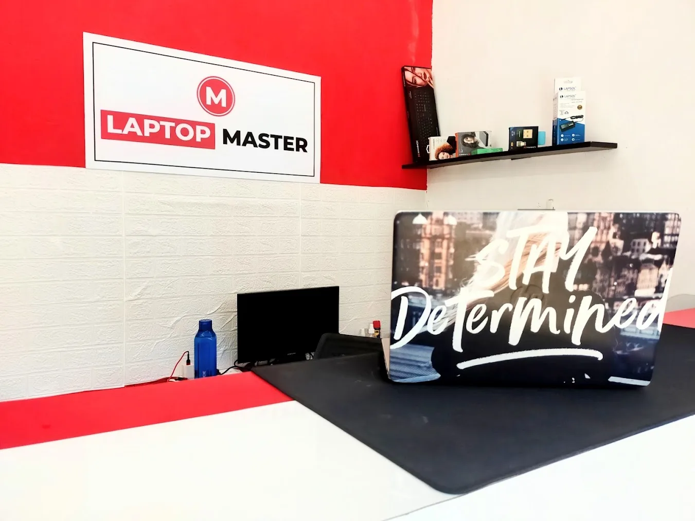
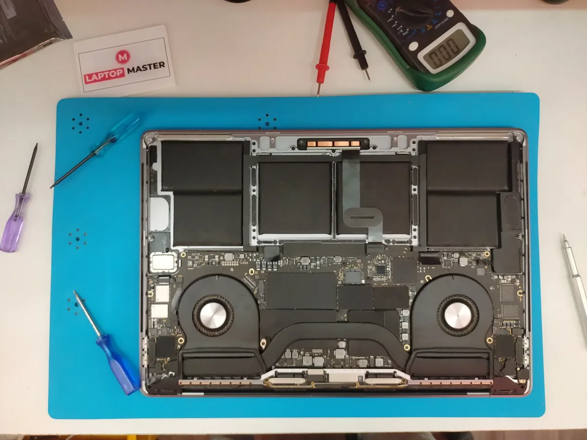
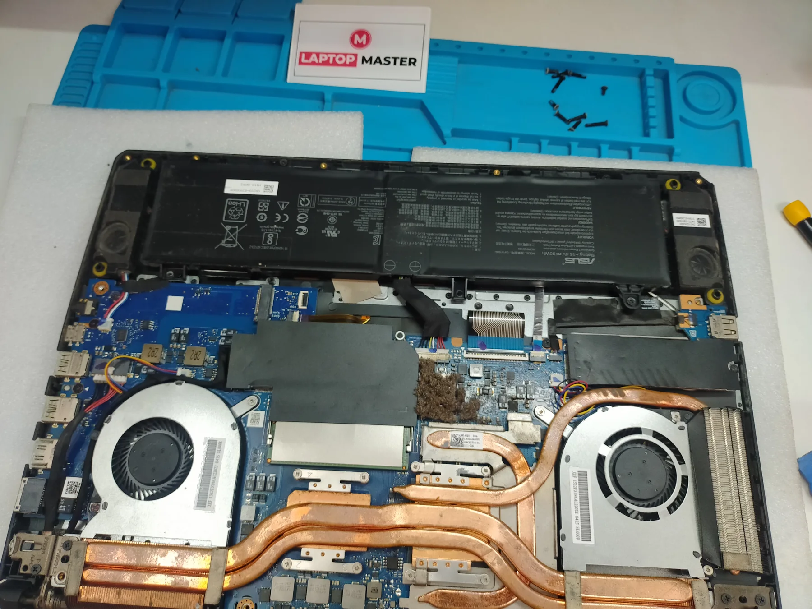
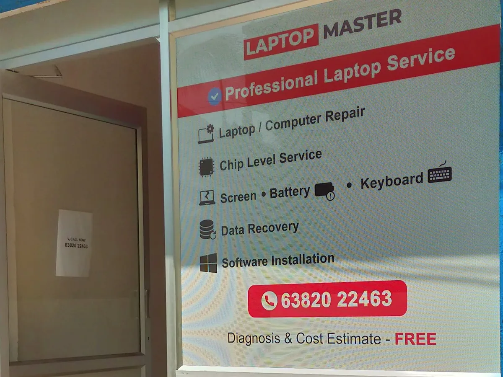
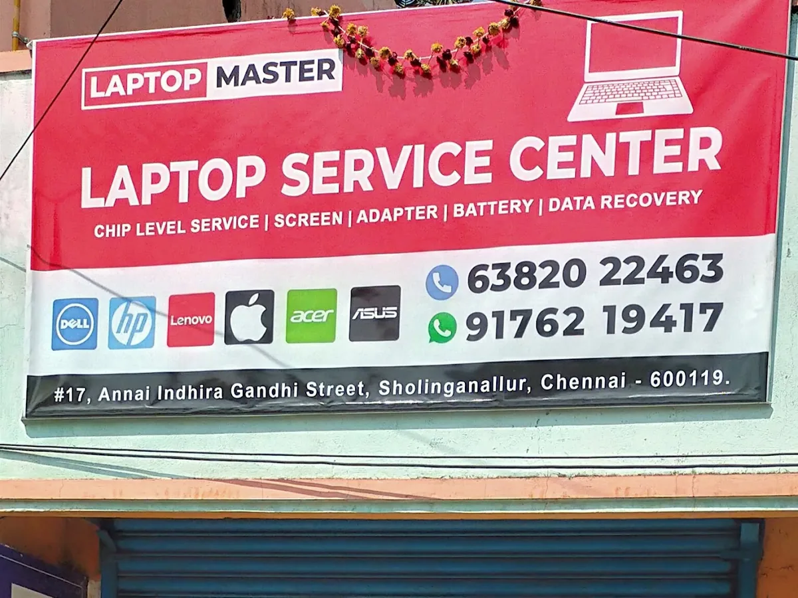

Laptop Repair
No power, no display, charging issues, overheating, slow performance and general laptop problems.
LAPTOP & COMPUTER SERVICE CENTER • SHOLINGANALLUR
Laptop not working? Get professional diagnosis and repair for motherboard, chip-level, power, display, charging, SSD, RAM, battery and other laptop problems.

OUR SPECIALTY
Some laptop problems cannot be solved by simply replacing external parts. Our service focuses on proper motherboard diagnosis and component-level troubleshooting for suitable laptop faults.
We first identify the actual fault and discuss the available repair or replacement options before proceeding.
WHAT WE DO
Professional service for laptop hardware, motherboard, upgrades, replacement parts and software requirements.
No power, no display, charging issues, overheating, slow performance and general laptop problems.
Motherboard diagnosis and repair for suitable power, charging and board-level faults.
Component-level troubleshooting for suitable laptop motherboard faults.
Diagnosis for laptop display, backlight, graphics and related hardware problems.
Upgrade storage and memory to improve boot time, responsiveness and capacity.
Laptop display replacement for cracked, damaged or faulty screens.
Battery diagnosis and replacement for laptops with poor or no battery backup.
Keyboard, hinge and related laptop body component replacement.
Internal cleaning, thermal paste service and basic overheating maintenance.
Data backup, recovery assistance, Windows installation and software setup.
Desktop troubleshooting, hardware upgrades, cleaning and general computer service.
Convenient laptop pickup and delivery service for customers in selected Chennai areas.
CONVENIENT SERVICE
We also provide laptop pickup and delivery for customers in selected areas around Sholinganallur and OMR.
Contact us with your location and laptop problem. We'll explain the available pickup option.
WHY LAPTOP MASTER
We focus on understanding the actual problem before recommending a repair, replacement or upgrade.
Understand the fault before proceeding with service.
Component-level troubleshooting for suitable motherboard faults.
Choose a suitable repair or upgrade based on the device and requirement.
Conveniently located in Sholinganallur, Chennai 600119.
Convenient service option available for selected nearby areas.
Call or WhatsApp for service enquiries and updates.
OUR WORK
Real photos from LAPTOP MASTER showing our shop, laptop repair work and motherboard service.




CUSTOMER REVIEWS
View our latest Google customer feedback and service experience from LAPTOP MASTER in Sholinganallur.
Before choosing a repair service, you can check our Google listing for current customer reviews, photos and business information.
SERVICE AREAS
LAPTOP MASTER is based in Sholinganallur and serves customers from nearby OMR and Chennai areas. Pickup and delivery availability depends on location.
FAQ
Quick answers about diagnosis, repairs, upgrades and pickup & delivery.
Yes. We diagnose suitable no-power and dead-laptop faults, including power, charging and motherboard-related issues.
Yes. We provide component-level diagnosis and repair for suitable laptop motherboard faults.
Yes. SSD and RAM upgrades are available depending on the laptop model and supported specifications.
Yes. Screen and battery replacement can be arranged based on the laptop model and compatible part availability.
Yes, pickup and delivery is available in selected areas around Sholinganallur and OMR. Contact us with your location to check availability.
Call 6382022463 or WhatsApp us with your laptop model and problem. You can also visit our service center in Sholinganallur, Chennai 600119.
CONTACT LAPTOP MASTER
Call or WhatsApp us for your laptop problem, service enquiry or pickup and delivery request.
No 17 Annai Indhira Gandhi Street,
Sholinganallur,
Chennai 600119
LAPTOP MASTER • SHOLINGANALLUR
Call or WhatsApp LAPTOP MASTER for laptop repair, motherboard service, upgrades and pickup & delivery.